Freeform pools
Lagoon or naturalistic pools with gentle curves, natural rock around the edge and waterfalls, built to feel like an oasis. Long popular in Bakersfield and Southern California.
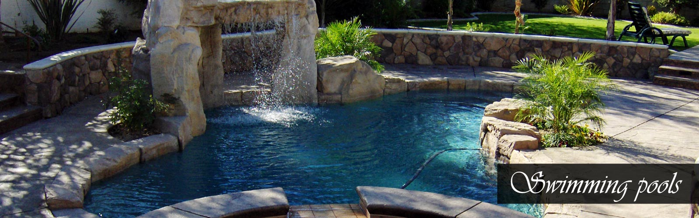
Everything that goes into a backyard, built by one Bakersfield team. Pick a pool style, add water features and finish with landscape and outdoor living.
We hold every project to high quality standards and stay on the details from beginning to end. A few questions to start with: how will it look in your backyard, what shape and size suit your house, and which water features fit best?
Lagoon or naturalistic pools with gentle curves, natural rock around the edge and waterfalls, built to feel like an oasis. Long popular in Bakersfield and Southern California.
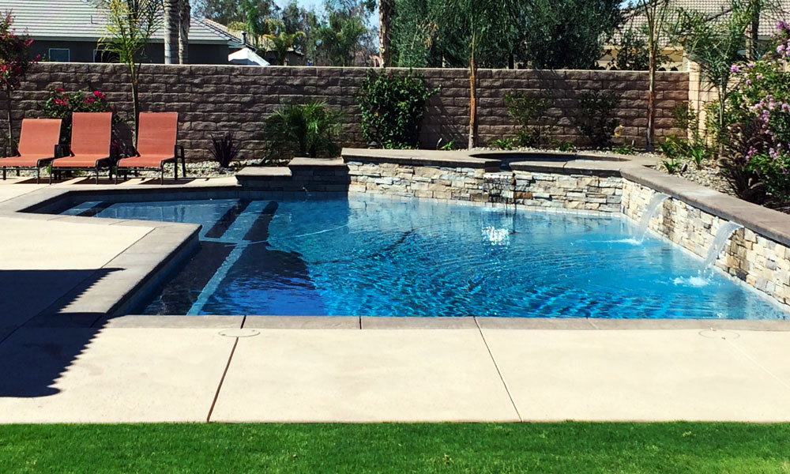
Classic, elegant straight and angled lines. An L-shaped pool, for example, gives a large shallow area to relax or play plus a longer area for laps.
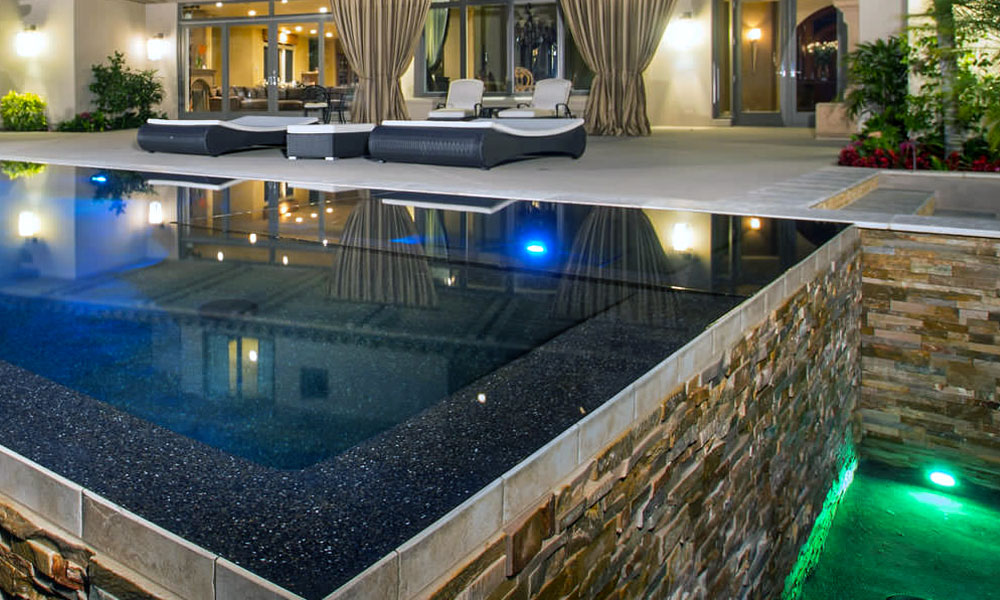
Water flows over a weir wall into a catch basin and recirculates, so the pool blends into the view beyond it.
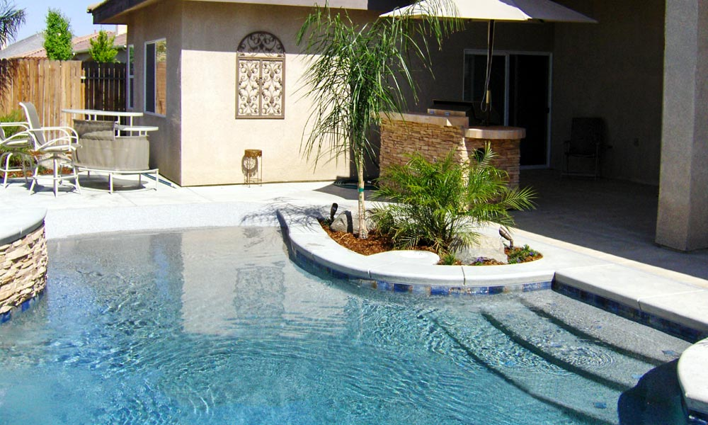
A gradual slope from the deck into the water, just like a beach, ideal for lagoon or tropical settings. It can be added to a gunite pool in place of the top step.
A long, narrow straight-away for exercise or training. One-lane lap pools work well for smaller backyards, indoors or out.
Water circulates over all sides into a holding tank and back, for a mirror-like surface with no ripples against the walls, until someone jumps in.
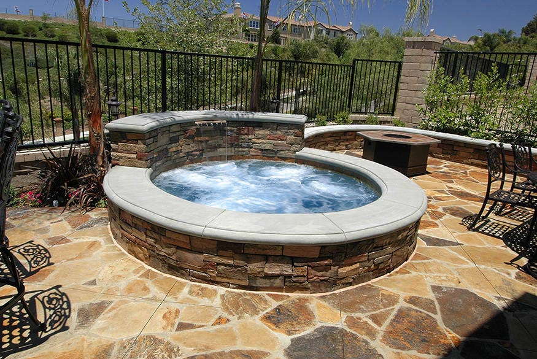
Most of our custom spas attach to the pool and create a spillover or waterfall. Swim, then slip into warm, bubbling water. Free-standing spas are possible too.

Spa plus pool: roughly 10–16 ft long and 6–8 ft wide, with strong jets to swim against. A pool by day, a heated spa by night, great for tight lots.
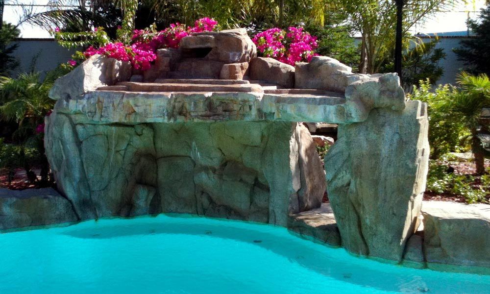
From a few boulders to an all-rock paradise, our rock work is built with detail and coloring that looks natural, and made to stand up to Bakersfield’s heat and cold.
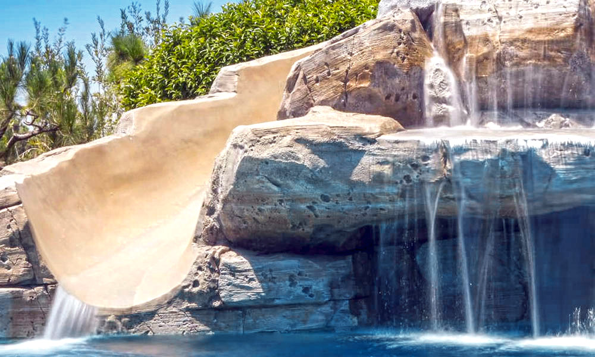
A big rockslide or a simple waterfall turns a pool into an oasis, and a slide is a sure hit with kids.
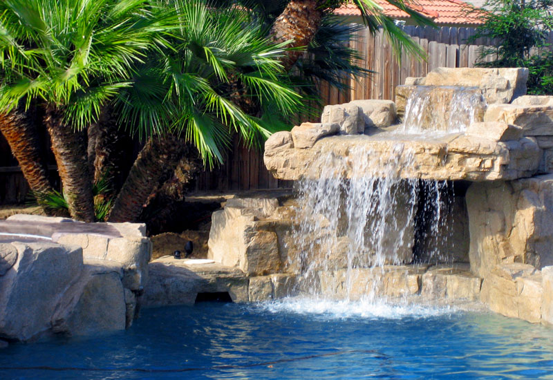
Natural-looking waterfalls for large custom homes or smaller yards, easy to maintain, especially with a custom pool.
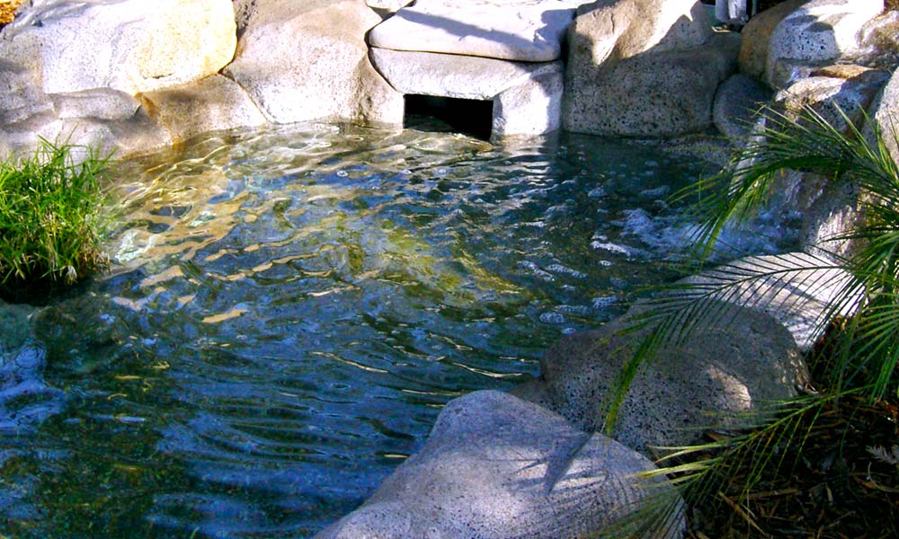
Garden ponds with running water, plants and possibly koi. We plan the location, view, sun, power and water access with you.
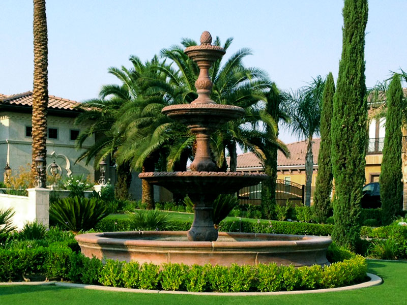
Custom fountains of specially shaped concrete, built to your imagination as a centerpiece for the landscape.
Landscape design around a pool means structures, plants, hardscape, water use and drainage all working together. We have created hundreds of landscapes throughout Kern County.
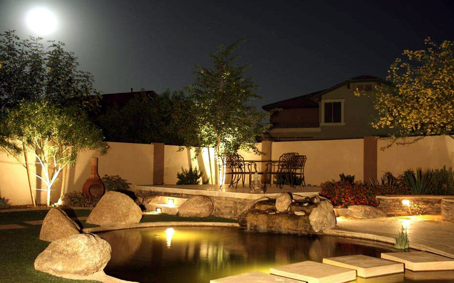

Refrigerator, sink and natural-gas grill. Pretty much what you can dream, we can build.
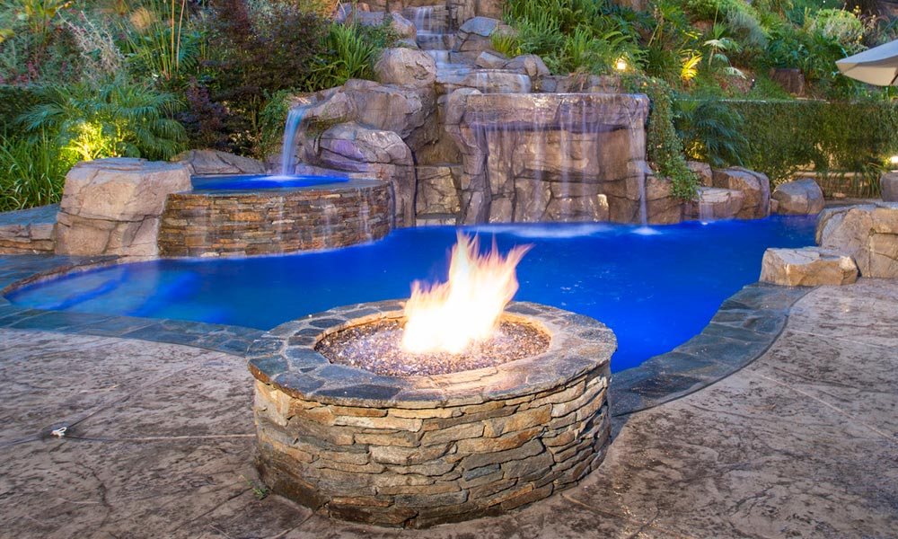
Custom fire features that bring together masonry, gas, plumbing and stonework, for warmth all year.
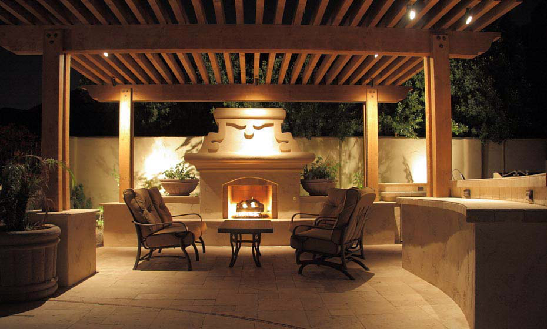
Outdoor living areas and covers, in concrete, pavers, stone, tile, brick or rock, attached or detached.
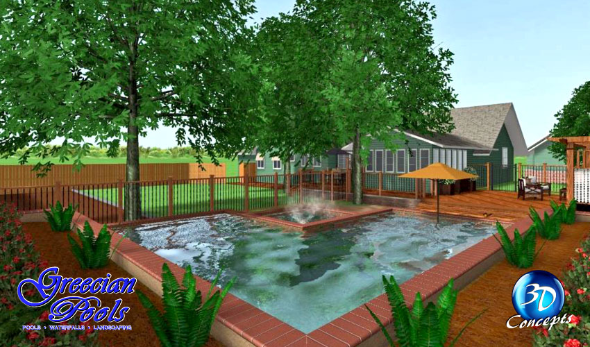
Photo-based designs, plan drawings and full 3D walkthroughs of yards, walkways, pools, ponds, outdoor kitchens and patios, with lighting, shadows and reflective water.